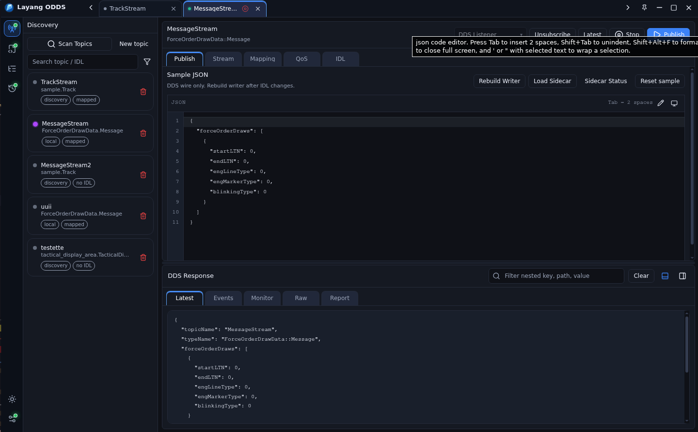
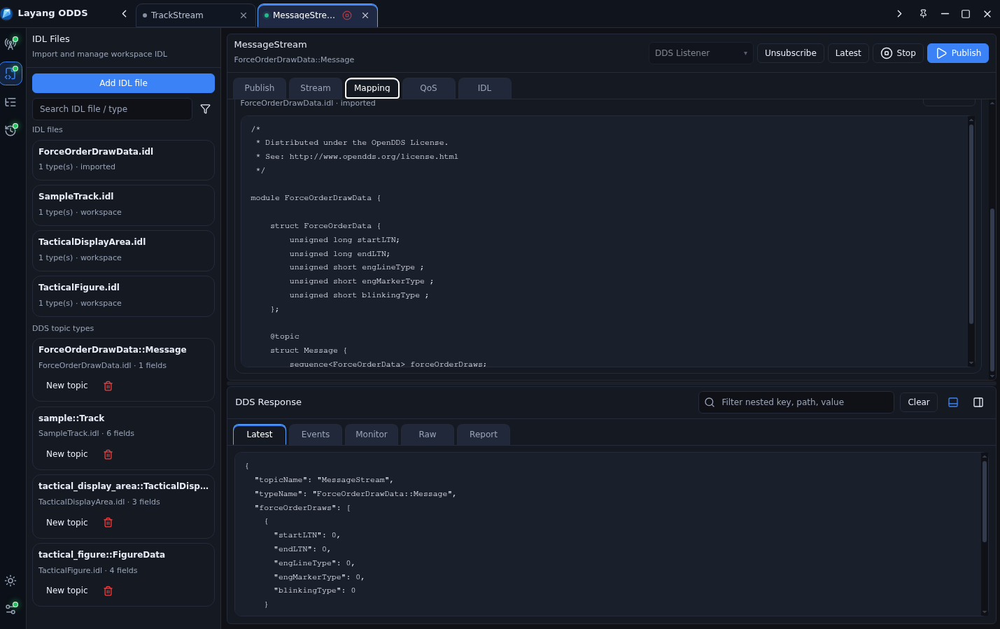
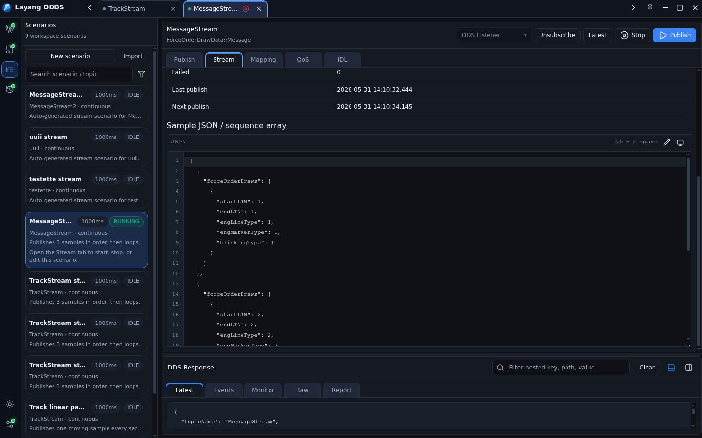
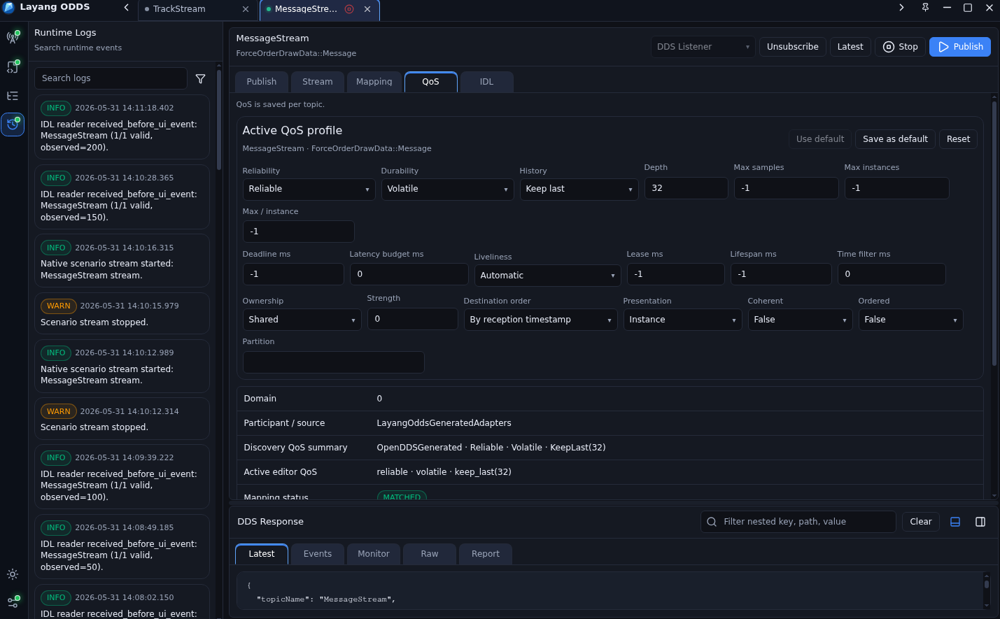

Scan DDS topics from the network and open them as topic tabs.
OpenDDS simulator
Discover topics, upload IDL, publish samples, and run DDS scenarios.
Layang ODDS brings the main DDS workflow into one desktop app: scan topics from the network, subscribe with DDS Listener or Dynamic mode, publish JSON samples, stream scenario arrays, and tune QoS per topic.
Latest release · OpenDDS environment setup · Source access by request

Download
Download the latest Layang ODDS release.
Get release notes and available artifacts from GitHub Releases. If an RPM package is attached,
install it with sudo dnf install ./layang-odds-*.rpm.
OpenDDS Environment
Configure OpenDDS from an env file.
Use ~/.config/layang-odds/env for normal user setup, or
/etc/layang-odds/layang-odds.env for system-wide setup.
Restart the app after editing the env file.
User config
System-wide config
No manual export
DDS Runtime Build check
# Option 1: user config
mkdir -p ~/.config/layang-odds
nano ~/.config/layang-odds/env
# Option 2: system-wide config
sudo mkdir -p /etc/layang-odds
sudo nano /etc/layang-odds/layang-odds.env
OPENDDS_ROOT=/opt/OpenDDS-3.29.1
LAYANG_ODDS_DDS_CONFIG=$HOME/.config/layang-odds/rtps.ini Workflow
Built for day-to-day DDS simulation and verification.
The page focuses on the current ODDS workflow: discovery, subscription, publishing, IDL upload, scenarios, and QoS.
Use DDS Listener or Dynamic mode and inspect latest samples, raw data, events, and runtime logs.
Edit JSON payloads, publish once, or run a continuous stream from a scenario.
Upload IDL, map DDS types, and tune topic QoS before testing the wire flow.
Publish and subscribe
Scan DDS topics and work with live samples.
The Discovery panel lets operators scan topics from the network, select a topic, choose DDS Listener or Dynamic mode, publish JSON samples, start or stop streams, and watch the latest response in the same screen.
Network topic scan
DDS Listener mode
Dynamic mode
Latest response viewer

IDL workspace
Upload IDL and create DDS topic mappings.
Imported IDL files stay visible in the workspace. ODDS lists the discovered DDS topic types, keeps the original source readable, and lets operators create topic tabs from those types.
Add IDL file
Browse imported IDL
Inspect source text
Create topic from type

Scenario stream
Build scenarios with ordered JSON arrays and loops.
Scenario definitions can hold a sequence of DDS payloads. The stream runner publishes each sample in order and can loop the array continuously for repeatable simulations.
New or imported scenario
Ordered sample array
Loop publishing
Interval control

QoS editor
Fine-tune QoS per topic before testing.
The QoS tab exposes the active profile for a topic, including reliability, durability, history, depth, deadline, liveliness, lease duration, lifespan, partition, and ownership settings.
Reliability and durability
History and depth
Deadline and latency
Save or reset profile

Support
Need help or want to collaborate?
Report issues, request features, discuss collaboration, or ask for source access.